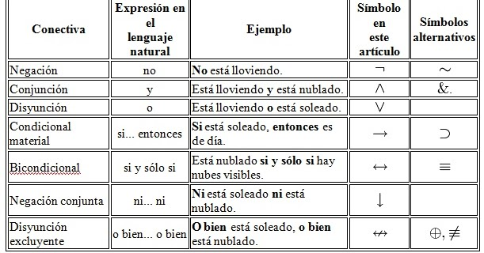

información
Tabla de la verdad
Una tabla de verdad, o tabla de valores de verdad, es una tabla que muestra el valor de verdad de una proposición compuesta, para cada combinación de verdad que se pueda asignar.
Fue desarrollada por Charles Sanders Peirce por los años 1880, pero el formato más popular es el que introdujo Ludwig Wittgenstein en su Tractatus logico-philosophicus, publicado en 1921.
Verdadero
El valor verdadero se representa con la letra V; si se emplea notación numérica se expresa con un uno: 1; en un circuito eléctrico, el circuito está cerrado.
Falso
El valor falso se representa con la letra F; si se emplea notación numérica se expresa con un cero: 0; en un circuito eléctrico, el circuito está abierto.
Variable
Para una variable lógica P, Q, R, ... pueden ser verdaderas V, o falsas F
Negación
La negación es un operador que se ejecuta, sobre un único valor de verdad, devolviendo el valor contradictorio de la proposición considerada. Se simboliza con ¬
Conjunción
La conjunción es un operador, que actúa sobre dos valores de verdad, típicamente los valores de verdad de dos proposiciones, devolviendo el valor de verdad verdadero cuando ambas proposiciones son verdaderas, y falso en cualquier otro caso. Es decir, es verdadera cuando ambas son verdaderas Se simboliza con. Se denota con la letra ^
Disyunción Inclusiva
La disyunción "pvq" será verdadera en caso de que p sea verdadera, o q sea verdadera, o tanto p como q sea verdadera: se trata de la disyunción inclusiva. Siempre que utilicemos en el lenguaje natural la conjunción disyuntiva "o" en este sentido, utilizaremos el símbolo "v".
Disyunción Exclusiva
La disyunción exclusiva, que viene a decir que al menos una de las opciones es verdadera, pero sólo una. En este sentido exclusivo, si en "pwq", p es verdadera y q también lo es, la disyunción exclusiva es falsa.
Implicación o Condicional
El condicional material es un operador que actúa sobre dos valores de verdad, típicamente los valores de verdad de dos proposiciones, devolviendo el valor de falso sólo cuando la primera proposición es verdadera y la segunda falsa, y verdadero en cualquier otro caso.
Equivalencia, doble implicación o Bicondicional
El bicondicional o doble implicación es un operador que funciona dando el valor de verdad cuando ambos valores son iguales y dando el valor de falsedad cuando ambos valores son diferentes
Ejemplos
